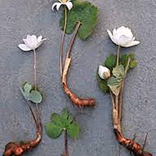
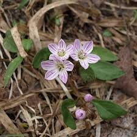
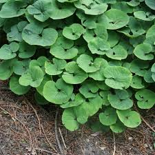
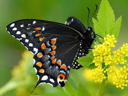
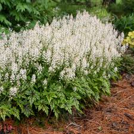
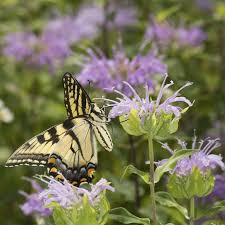
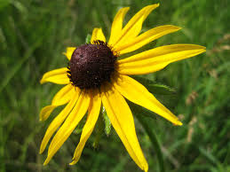
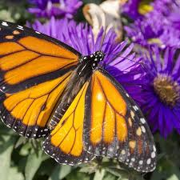
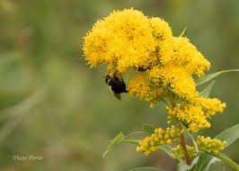

Native Plants in Westchester, NY
Promoting native plants is key to enhancing biodiversity, supporting pollinators, and improving ecosystem resilience. These plants have adapted to local conditions, requiring less maintenance while providing essential food and habitat.
Early Spring (Late March – Early May)
Support early-emerging pollinators like mason bees and bumblebee queens.

Bloodroot (Sanguinaria canadensis)
White flowers; excellent for early pollinators.
White flowers; excellent for early pollinators.

Spring Beauty (Claytonia virginica)
Vital nectar source for early-emerging bees.
Vital nectar source for early-emerging bees.

Wild Ginger (Asarum canadensis)
Ground cover that supports native insects.
Ground cover that supports native insects.
Mid to Late Spring (April – June)
Attracts butterflies, bumblebees, and other key pollinators.

Wild Columbine (Aquilegia canadensis)
Red bell-shaped flowers; attracts hummingbirds and long-tongued bees.
Red bell-shaped flowers; attracts hummingbirds and long-tongued bees.

Golden Alexander (Zizia aurea)
Important nectar source for butterflies and native bees.
Important nectar source for butterflies and native bees.

Foamflower (Tiarella cordifolia)
Pollinated by small bees and flies; ideal for shady areas.
Pollinated by small bees and flies; ideal for shady areas.
Summer (June – August)
Supports butterflies, honeybees, and native bees during peak pollination season.

Butterfly Weed (Asclepias tuberosa)
Essential host plant for monarch butterflies.
Essential host plant for monarch butterflies.

Purple Coneflower (Echinacea purpurea)
Resilient and attracts diverse pollinators.
Resilient and attracts diverse pollinators.

Wild Bergamot (Monarda fistulosa)
Aromatic blooms that attract hummingbirds and butterflies.
Aromatic blooms that attract hummingbirds and butterflies.

Black-eyed Susan (Rudbeckia hirta)
Provides seeds for birds and nectar for bees.
Provides seeds for birds and nectar for bees.
Late Summer to Early Fall (August – October)
Vital for migrating species like monarch butterflies and late-season bees.

New England Aster (Symphyotrichum novae-angliae)
Late-season nectar source; key for monarch butterflies.
Late-season nectar source; key for monarch butterflies.

Goldenrod (Solidago spp.)
Supports over 100 species of insects; key for fall pollinators.
Supports over 100 species of insects; key for fall pollinators.